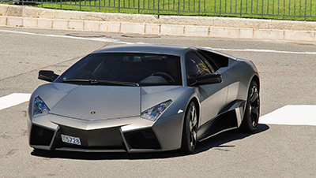
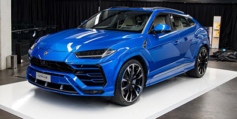

Lamborghini Reventon

Reventon er en av de mest sjeldene nyere Lamborghiniene og ble først produsert i 2008. og er etterkommeren av den berømte Murcelago.
Bilen har en 6,5 liter V12 motor med 660 hestekrefetr og en toppfart på 330km/t og 0-100 på 3,4 sekunder. Fordi denne biler er så sjelden og det bare er lager 20 eksemplarer av den, vil denne koste rundt 8 000 000 millioner kroner.
Lamborghini Urus

Urus er lamborginis første suv siden de produserte Lm002 fra 1986 til 1993. Lamborghini Urus ble først laget som en Consept bil i 2014, men produksjonen startet ikke før i 2017.
Bilen har 4 liters tvinturbo v8 med 641 hestekrefter som utgjør 0 til 100 på 3.6 sekunder, den har også en toppfart på 305 km/t. Urus koster over 3 000 000 kroner.